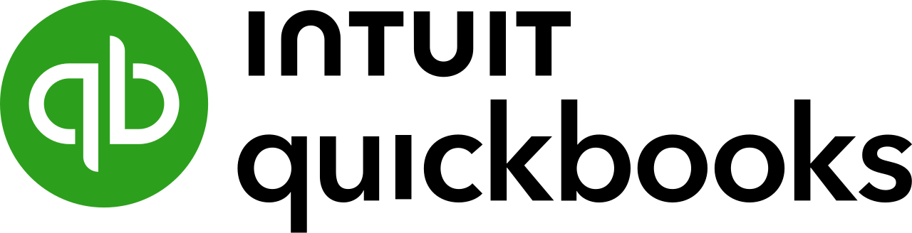
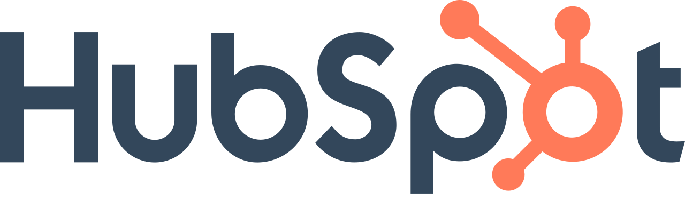
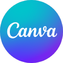
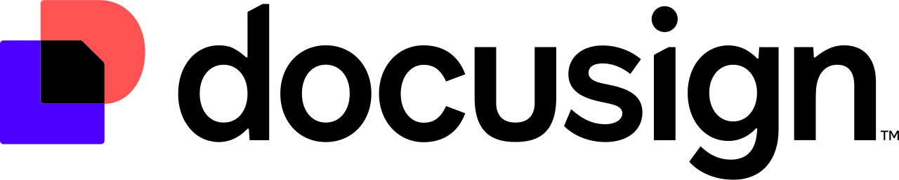
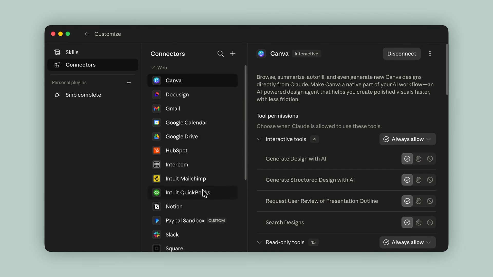
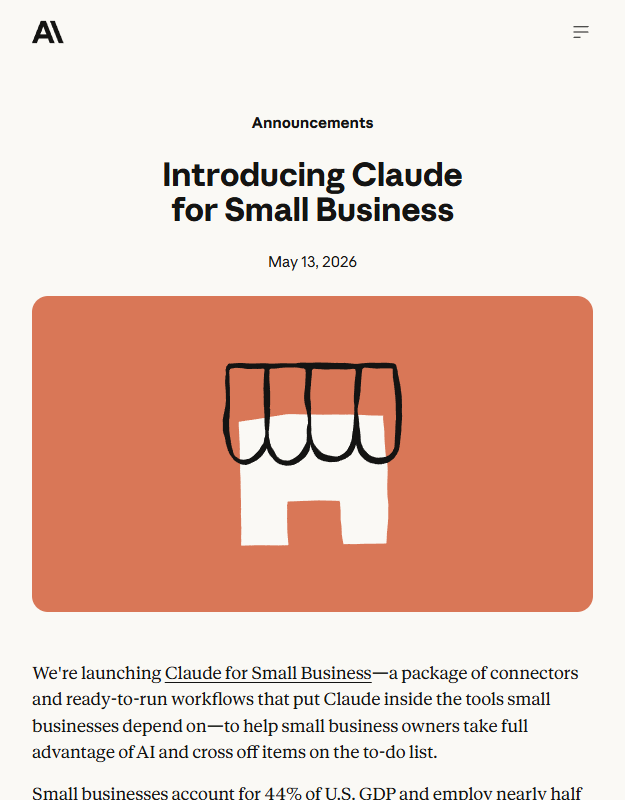
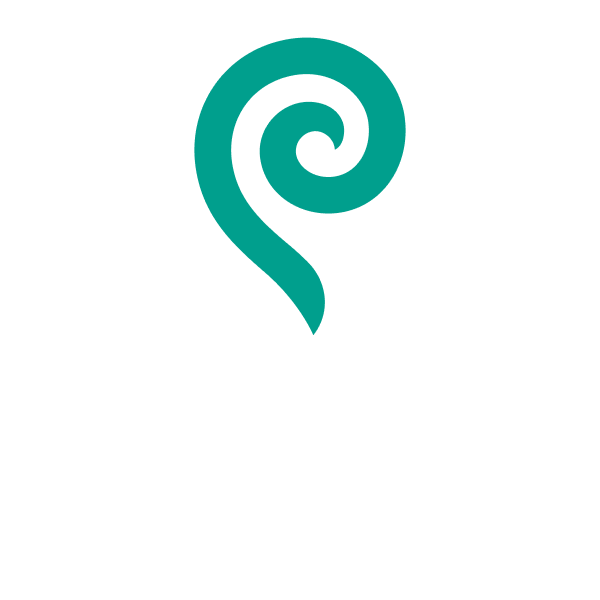

CLAUDE FOR
SMALL BUSINESS.
SMALL BUSINESS.
15 WORKFLOWS · 15 SKILLS · JUST SHIPPED
The Sunday-Night Scramble
Every owner asks the same question.
Will I make payroll?
QuickBooks
PayPal
Gmail
The bank
Payroll provider
/plan-payroll
It's not a new model.
It's a bundle.
0
WORKFLOWS
0
SKILLS
Invoice chaser
Margin analyzer
Month-end prepper
Tax-season organizer
Contract reviewer
Lead triager
THE MODEL WAS NEVER THE BOTTLENECK
Inside The Tools You Use
They live where you already work.




FIRST CRM CONNECTOR FOR CLAUDE
The Companion Demo
WHAT IT ACTUALLY LOOKS LIKE
WATCH THE FULL DEMO
link in description

NOT FOR FORTUNE 500
“Built for the businesses that never had access to enterprise AI — until now.”
LINA OCHMAN
Head of SMB · Anthropic
15HVAC company
30Landscaper
50Real-estate brokerage
The Receipt
ANTHROPIC.COM · MAY 13 2026
anthropic.com/news/claude-for-small-business

@CANVA CONFIRMS ON X
FIRST-PARTY · EVERY TOOL LISTED
Trust + Customers

Purity Coffee
Surfaced problems they didn't know they had
Simple Modern
Constraints aren't constraints anymore
MidCentral Energy
Tedious clerical work just became value-add
Approval-required by default
Doesn't train on your data
50%
of SMB owners cite data security as their #1 AI hesitation
DANIELA AMODEI · CO-FOUNDER & PRESIDENT · ANTHROPIC
15 + 15
SHIPPED.
SHIPPED.
Claude for Small Business
SUNDAY-NIGHT PAYROLL → 5 MIN
Switching from Copilot — or sticking?
dynamous.ai — learn more →